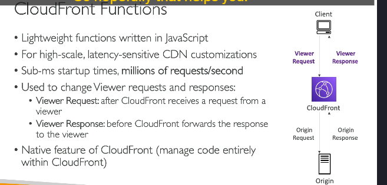
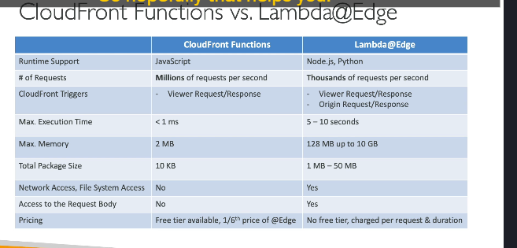

lamdaEdge CloudFrontFunc
Chi tiết kiến thức về Customization At The Edge
Customization At The Edge là khái niệm liên quan đến việc thực hiện các thao tác logic ngay tại Edge Location (các điểm phân phối gần với người dùng) trước khi yêu cầu được chuyển đến ứng dụng chính. Điều này giúp giảm độ trễ và tối ưu hóa hiệu suất.
1. Edge Functions
Edge Functions là những đoạn mã bạn viết và gắn vào phân phối của CloudFront. Các chức năng này giúp thực thi logic ngay tại các Edge Location và hoàn toàn serverless. AWS cung cấp hai loại Edge Functions:
- CloudFront Functions
- Lambda@Edge
2. Lợi ích và các trường hợp sử dụng
Edge Functions có thể được sử dụng cho các trường hợp như:
- Bảo mật và quyền riêng tư trên website.
- Ứng dụng web động tại Edge.
- Tối ưu hóa công cụ tìm kiếm (SEO).
- Chuyển hướng thông minh giữa các Origin.
- Giảm thiểu bot tại Edge.
- Chuyển đổi hình ảnh theo thời gian thực tại Edge.
- A/B Testing, xác thực và phân quyền người dùng.
- Ưu tiên người dùng và phân tích hành vi.
3. CloudFront Functions

- Đặc điểm:
- Viết bằng JavaScript.
- Chỉ áp dụng trên Viewer Request (yêu cầu từ client đến CloudFront) và Viewer Response (phản hồi từ CloudFront về client).
- Thời gian thực thi ngắn: Dưới 1ms.
- Quy mô lớn: Hỗ trợ hàng triệu yêu cầu mỗi giây.
- Tích hợp và quản lý trực tiếp trên giao diện CloudFront.
- Các trường hợp sử dụng:
- Cache Key Normalization: Tối ưu hóa khóa cache.
- Header Manipulation: Thêm, chỉnh sửa hoặc xóa các HTTP header.
- URL Rewrite/Redirect: Thay đổi hoặc chuyển hướng URL.
- Authorization Request: Xác thực và kiểm tra JWT Token.
4. Lambda@Edge

-
Đặc điểm:
-
Viết bằng NodeJS hoặc Python.
- Áp dụng trên tất cả các giai đoạn:
- Viewer Request.
- Origin Request (yêu cầu từ CloudFront đến Origin Server).
- Origin Response (phản hồi từ Origin Server đến CloudFront).
- Viewer Response.
- Thời gian thực thi dài hơn: Lên đến 5–10 giây.
- Quy mô thấp hơn: Hỗ trợ hàng nghìn yêu cầu mỗi giây.
- Có thể sử dụng bộ nhớ tùy chỉnh, CPU có thể điều chỉnh, tích hợp các thư viện của bên thứ ba, và có quyền truy cập vào file system hoặc body của HTTP request.
-
Hỗ trợ truy cập mạng để tích hợp với các dịch vụ bên ngoài.
-
Các trường hợp sử dụng:
- Xử lý phức tạp, chẳng hạn như:
- Truy cập file system hoặc body HTTP request.
- Tích hợp với dịch vụ AWS khác qua SDK.
- Phân tích hoặc biến đổi dữ liệu nâng cao.
5. So sánh giữa CloudFront Functions và Lambda@Edge

| Tiêu chí | CloudFront Functions | Lambda@Edge |
|---|---|---|
| Ngôn ngữ hỗ trợ | JavaScript | NodeJS, Python |
| Quy mô | Hàng triệu yêu cầu/giây | Hàng nghìn yêu cầu/giây |
| Trigger | Viewer Request, Viewer Response | Viewer Request, Origin Request, Origin Response, Viewer Response |
| Thời gian thực thi | < 1ms | Lên đến 10 giây |
| Tính năng bổ sung | Chỉ xử lý header, cache key, URL đơn giản | Tích hợp phức tạp, sử dụng thư viện bên ngoài, truy cập hệ thống tập tin và dữ liệu body |
6. Khi nào chọn CloudFront Functions và Lambda@Edge?
-
CloudFront Functions:
-
Khi cần xử lý nhẹ, đơn giản và độ trễ thấp (< 1ms).
-
Lambda@Edge:
- Khi cần thực hiện logic phức tạp và tích hợp với các dịch vụ khác.
- Ví dụ: Phân tích dữ liệu, xác thực người dùng, hoặc xử lý file và body của HTTP request(#phân-tích-chi-tiết).
Kết luận: Việc chọn loại Edge Function phụ thuộc vào mức độ phức tạp và hiệu suất cần thiết của ứng dụng. CloudFront Functions phù hợp cho tác vụ nhẹ, trong khi Lambda@Edge mạnh mẽ hơn cho các thao tác phức tạp.